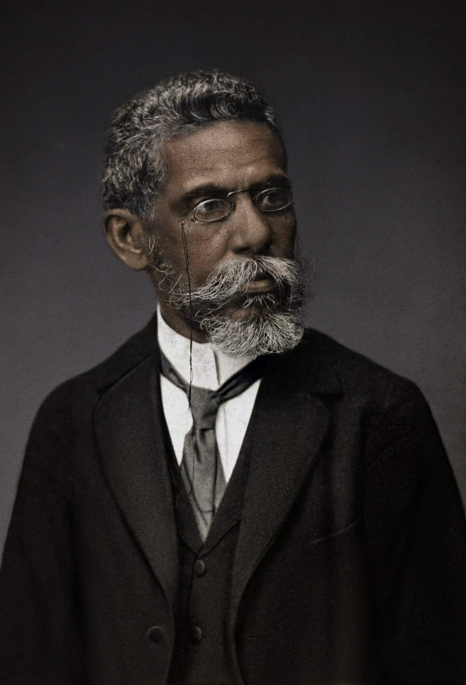

Joaquim Maria Machado de Assis
Nascimento: 21 de junho de 1839, Rio de Janeiro, Rio de Janeiro
Falecimento: 29 de setembro de 1908, Rio de Janeiro, Rio de Janeiro
Movimento literário: Realismo
Pais: Maria Leopoldina da Câmara Machado, Francisco José de Assis
Cônjuge:Carolina Augusta Novais (de 1869 a 1904)
Características: Sofria de epilepsia e gagueira, além de ser muito tímido
Principais obras publicadas:
- O Alienista (1882)
- Dom Casmurro (1889)
- Quincas Borba (1891)
- Helena (1876)
- Pai contra mãe (1906)
- Esaú e Jacó (1904)
Joaquim Maria Machado de Assis nasceu no Rio de Janeiro no ano de 1839, filho de um
pintor e uma
lavadeira alforriados, Machado de Assis ficou órfão muito jovem e foi criado pela madrasta.
Machado de Assis teve um acesso limitado à educação formal; passou pela escola primária porém nunca
cursou uma universidade, seu grande intelecto, no entanto, permitiu com que ele desenvolvesse um
autodidatismo.
Publicou sua primeira obra ainda na adolescência, tratava-se de um soneto chamado "À Ilma. Sra.
D.P.J.A.". Cerca de dois anos depois da publicação de seu soneto, Machado, que sempre foi fascinado
por
livraria, entrou para a Imprensa Nacional, trabalhando na área de tipografia; lá ele conheceu o
autor
Manuel Antônio de Almeida e eles fundaram uma amizade.
Conforme sua carreira sofreu uma sucessiva expansão, o jovem passou a ser revisor do Correio
Mercantil
e, eventualmente, passou a integrar a equipe de redação do Diário do Rio de Janeiro. O primeiro
livro
publicado de sua autoria chamava-se “Ressurreição”, no ano de 1872. O escritor tem seu primeiro
contato
com a vida política quando começa a transcrever os debates realizados no Senado Federal para o
Jornal do
Rio. Posteriormente, um evento que marca sua vida é sua afiliação à Administração do Estado (1867).
Sua
esposa, Carolina Xavier de Novais, sempre o incentivou a persuadir sua paixão pela literatura, desse
modo, Machado de Assis continua escrevendo e publicando seus aclamados livros.
Escreveu “Memórias Póstumas de Brás Cubas” no ano de 1881, após passar por um período de
enfermidade, na
obra ele dá início a sua fase em que é considerado o pai do realismo no Brasil, sendo o
representante do
movimento literário no país. Sua nomeação como presidente da Academia Brasileira de Letras seu deu
no
ano de 1897, antecedendo em onze anos sua morte, que foi ocasionada por um câncer.